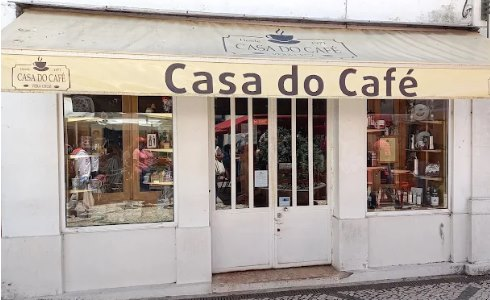
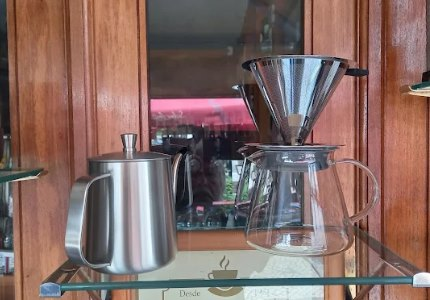
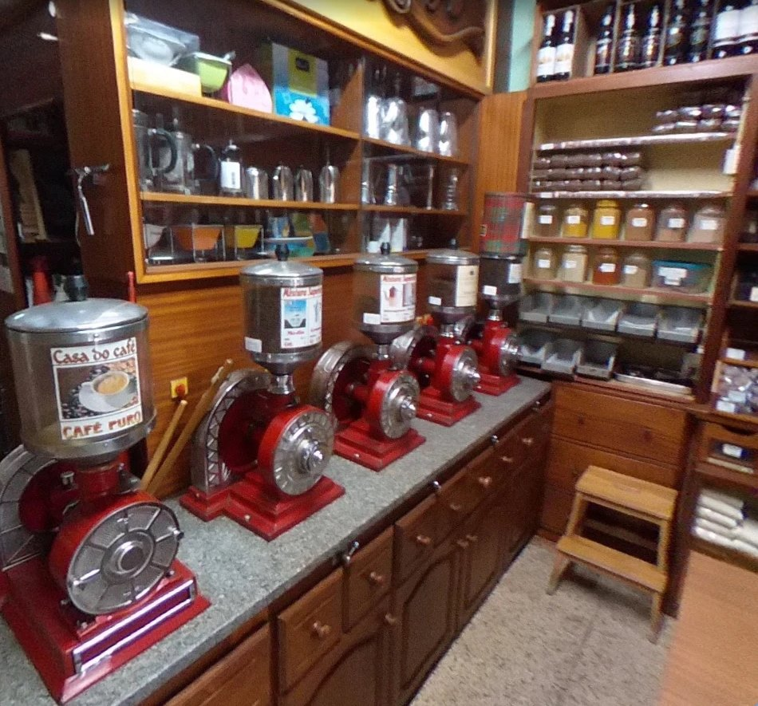
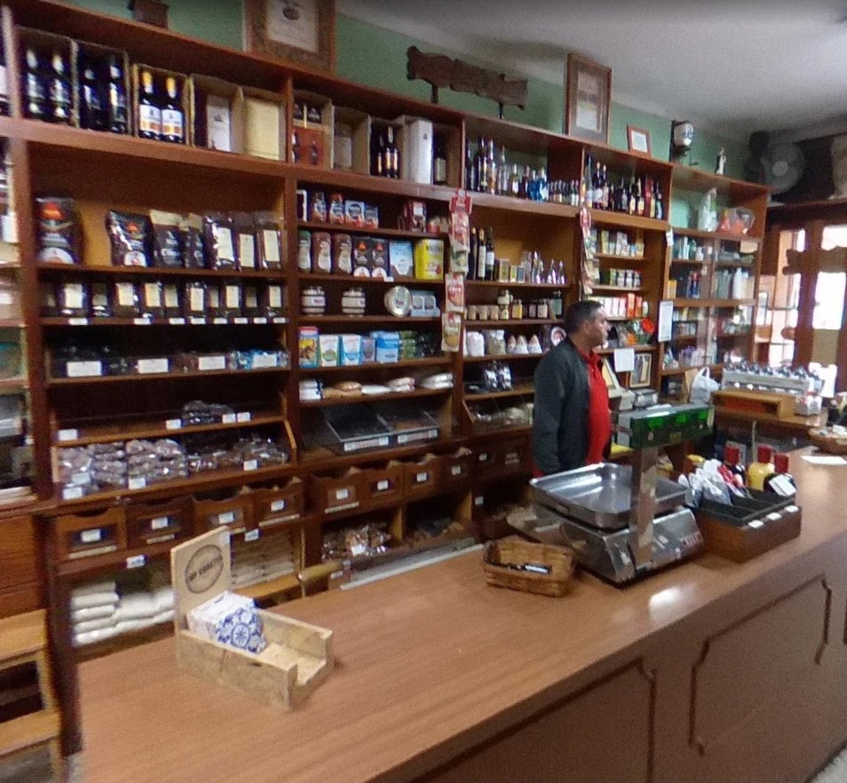
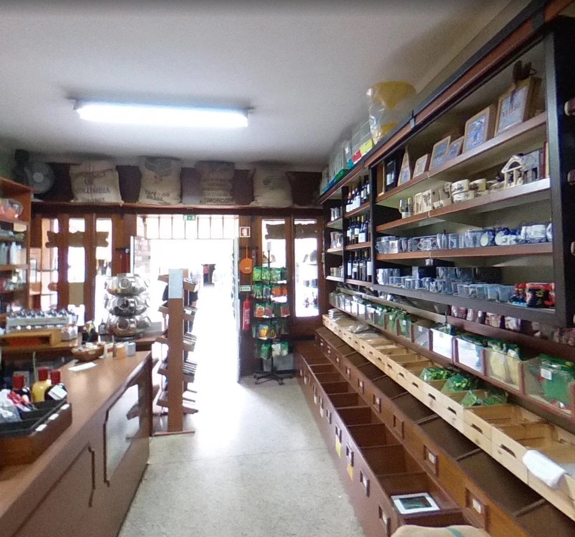

Arábica pura de seis origens, escolhida e moída à sua frente nos nossos moinhos tradicionais. Há mais de 50 anos no centro de Aveiro.
Colômbia, S. Tomé, Brasil, Quénia, Honduras e Timor — a granel ou em misturas da casa.
Diga-nos como faz o café em casa e nós acertamos a moagem: expresso, cafeteira ou filtro.
Frutos secos, bacalhau, vinhos, chás, especiarias, biscoitos e sementes de horta.

A nossa história
Desde 1971 que a Casa do Café abre a porta debaixo do mesmo toldo creme, na Praça 14 de Julho, logo depois dos Arcos. Lá dentro, os balcões de madeira, as gavetas a granel e os moinhos vermelhos continuam a fazer o que sempre fizeram: servir café acabado de moer a quem passa.
Hoje é o Sr. Frutuoso Seabra de Almeida quem está ao balcão, com o filho. Mercearia fina à moda antiga, sem largar a qualidade nem as coisas novas que valem a pena. [Confirmar com o Sr. Frutuoso: como começou a casa e quando ficou com ela]
Os nossos cafés
Vendido ao peso, em grão ou moído na hora. Prove uma origem pura ou peça a nossa mistura da casa.
| Arábica pura | Corpo | Acidez | Doçura | Intensidade | Melhor para |
|---|---|---|---|---|---|
| ColômbiaSuave, notas de caramelo | ExpressoFiltro | ||||
| S. ToméEncorpado, chocolate amargo | ExpressoItaliana | ||||
| BrasilDoce, frutos secos | ExpressoItaliana | ||||
| KenyaVivo e frutado | FiltroPrensa | ||||
| HondurasMacio, mel e fruta | FiltroItaliana | ||||
| TimorTerroso, final longo | ExpressoPrensa |
Escala de 1 a 5. Valores e notas indicativos [a confirmar com o Sr. Frutuoso]
Além das origens puras, o Sr. Frutuoso faz as suas próprias misturas no misturador da loja. Há clientes que ainda hoje pedem o "lote do Sr. Macedo", de uma casa de Aveiro que já fechou — e saem com ele.
A mercearia
Uma mercearia fina à moda antiga. E os frutos secos, sempre expostos à porta, são uma das razões para entrar.
Tâmaras, figos, cajus, amêndoas — ao natural e caramelizados
Para a mesa e para oferecer
Da mercearia de sempre
A granel, vendidos ao peso
Para acompanhar o café
Para a horta e para a panela
Cafeteiras, filtros e chaleiras
Em grão ou moído, origens e misturas da casa
Toque num frasco para ver como é.
| Fruto seco | Doçura | Crocância | Bom para |
|---|
Escala de 1 a 5. [Produtos e valores de exemplo — confirmar com o Sr. Frutuoso o que há na loja]
O coração da casa
Os moinhos vermelhos do balcão vieram da antiga fábrica Almacinha, no Porto. O Sr. Frutuoso foi procurá-los pelo norte do país, um a um, e restaurou-os. Um deles foi salvo da sucata.
Hoje são uma raridade em Portugal — e continuam a trabalhar todos os dias. Cada saco é moído e fechado à sua frente.
[História dos moinhos tirada de blogues de café (2013–2014) — confirmar com o Sr. Frutuoso]
Moagem à medida
Cada máquina pede uma moagem diferente. Escolha a sua e nós moemos na hora, à sua frente.

Como sempre se fez
Sinta o aroma e peça conselho ao balcão — cada origem tem a sua personalidade.
Do quarto de quilo ao quilo, leva só o que precisa, sempre fresco.
Nos moinhos vermelhos da casa, com a moagem certa para a sua máquina.
Num saco fechado na hora, para chegar a casa como saiu do moinho.
Encomende e levante na loja
Escolha o café ou os frutos secos, a quantidade e a moagem. Nós preparamos e é só passar na loja para levantar e pagar.
O cliente escolhe o café no telemóvel, a qualquer hora.
A encomenda chega à loja por email ou WhatsApp.
O café é moído na hora e fica à espera, com o nome do cliente.
A loja por dentro
Uma mercearia à moda antiga, com tudo arrumado em gavetas e prateleiras de madeira.



Fotografias provisórias retiradas do Google Maps (Smart CoDi, Prof. Oscar Bastidas Delgado) — a substituir por fotografias da casa.
Visite-nos
No centro de Aveiro, a poucos minutos dos canais.
[Horário de exemplo — confirmar]
Arraste para rodar · toque para viajar